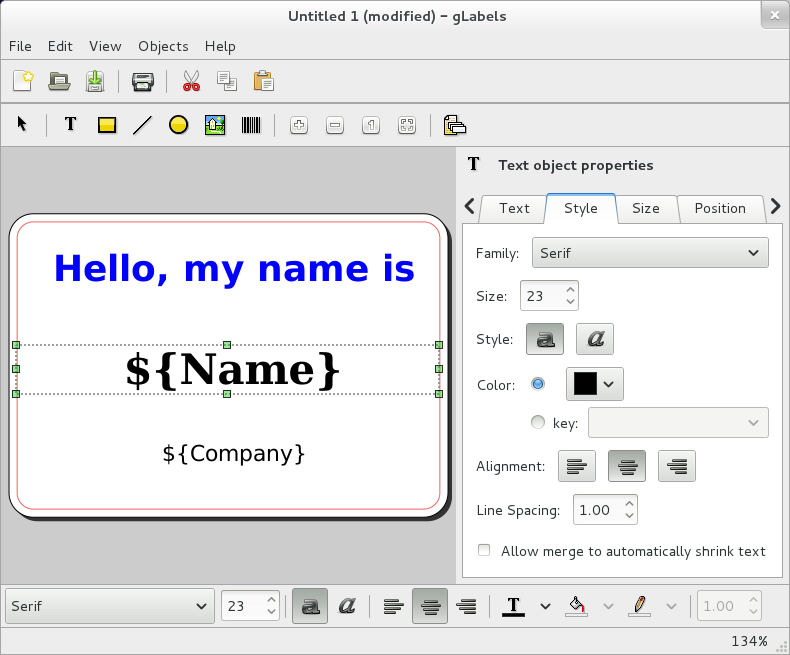
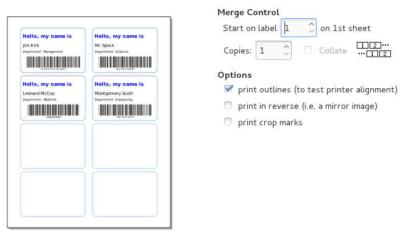

Thank you to the maintainers who build and share the tools that help Label-IT design and print labels.
A tribute to gLabels, from 2001 to today
Thank you to founder Jaye Evins, credited as Jim Evins in the original project, and to the developers, translators, documentation writers, template contributors, and testers who made gLabels possible. The project’s stock templates and data merge helped inspire Label-IT.
Mario Blättermann maintained documentation and internationalization. Austin Henry contributed the Evolution Data Server and vCard backends. Samual Lown and Robin Stuart worked on Zint barcode support.
GNOME project acknowledgments · Qt project credits
“drop my text and graphical elements as objects onto a prototype label or card and have fine control over their placement.”
gLabels founder, describing the editor he wanted to build in a 2009 SourceForge interview.
gLabels begins as a GNOME tool for laying out labels and business cards.
The 2.2 series supports CSV data merge and command-line batch printing.
gLabels 3 reaches its first stable release after the move to GTK 3 and GNOME 3. Release history
Upstream maintenance of gLabels 3 ends. Linux distributions continue to package the classic editor.
- Today · gLabels 4 development
A Qt 6 rewrite introduces a new layout, cross-platform support, continuous-roll stock, and user-defined variables. gLabels on Qt
The familiar workflow carries through the project’s history. Choose stock, place text and graphics on a label, and print copies or merge records from a data source.

Classic GNOME editor · gLabels 3

gLabels 3 merge printing
Images from the gLabels GTK manual, reproduced unmodified under CC BY-SA 3.0.